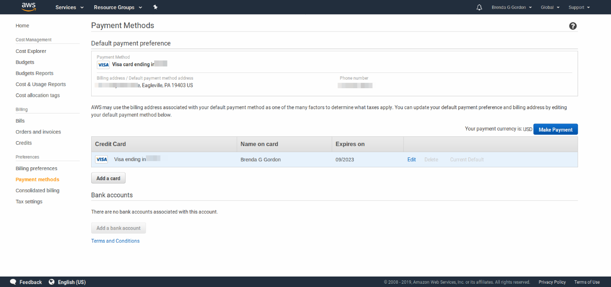

Een spookaccount bij Amazon
Een tijdje geleden kreeg ik een e-mail van Amazon met een vrolijke welkomst-boodschap. Ik kon gebruik maken van het free-tier programma van de Amazon Web Services. Nu is het wel zo dat ik daar wel eens rondgesnuffeld heb, op zoek naar een goedkoop Windows alternatief: een "Desktop As A Service", dat ik sporadisch zou gebruiken om enkele windows-only programma's te kunnen starten. Maar dat alternatief had ik daar juist niet gevonden. Ik heb een tijdje een Windows VPS gehad bij een andere provider. Dat was een stuk goedkoper. Een paar euro per maand slechts.
Onversleuteld
Maar waarom krijg ik dit mailtje dan? Weten ze nog dat ik drie jaar geleden daar rond heb gesnuffeld? Het kan zijn dat ik er mijn e-mail adres heb achtergelaten. Maar ik heb daar in ieder geval geen nieuw account aangemaakt de laatste weken. Het e-mail adres waar het welkomstbericht naar gestuurd, is een adres dat ik al geruime tijd niet meer actief gebruik, omdat het door onze vrienden van LinkedIn gelekt is, samen met mijn wachtwoord. Die lagen beide onversleuteld opgeslagen. LinkedIn doet kennelijk alles voor haar gebruikers, als er iets mee verdiend kan worden, maar het beschermen van haar gebruikers kost alleen maar geld, nietwaar? Dat wachtwoord voor het LinkedIn account heb ik natuurlijk meteen veranderd. Nu is dit e-mail adres ook al eens gebruikt om een petitie mee te ondertekenen voor een of andere mevrouw in Amerika. Geen idee wat dat was, maar ik moest wel weer de moeite doen, om die handtekening weg te halen.
Spookaccount
En nu dit spookaccount. Ik heb ook hier meteen het wachtwoord veranderd. Je kunt gelukkig altijd aangeven dat je het wachtwoord "vergeten" bent, om het daarna te kunnen veranderen. Als ik toen dacht dat ik er van af was, had ik buiten Amazon gerekend. Na het derde reclame-mailtje van "ga er eens iets mee doen", logde ik in op het account. Toen bleek dat ik ene mevrouw Brenda G Gordon uit Eagleville US was. Zou dat een dummy account zijn? Of is het echt van iemand anders? Het leek er zelfs op dat er een visa creditcard nummer was ingevuld. Oei, de laatste vier nummers zouden dat de nummers van mijn creditcard zijn?

Pfff, gelukkig niet! Wat nu te doen? Ik kan het account wel weggooien, maar dan is die mevrouw niet erg gelukkig, ook al heeft ze verder ook geen gebruik gemaakt van de diensten van Amazon. Binnen dit account is er de mogelijkheid vragen te stellen aan de hulpdienst van Amazon, de "support". Dus maar snel gevraagd of dit nu een dummy-account is of wat er verder aan de hand kan zijn, en of ik het account kan verwijderen. De case met nummer 6569695841 staat in de wacht en heeft prioriteit laag. Aan het nummer te zien, moeten ze inderdaad een hoop ergere dingen op te lossen hebben.
'Have a great day!'
Inmiddels, na 13 uur al een definitief tweede antwoord gekregen, nadat een eerste bevestigingsmail vriendelijk begon, daarna onvriendelijke gevolgen opsomde als ik nog zaken zou moeten betalen, ingeval ik het account zou verwijderen, en vervolgens weer vriendelijk afsloot: "Have a great day ahead!". Het definitieve antwoord ging als volgt:
Greetings from Amazon.com.
It appears that someone used your email address to create an Amazon Web Services (AWS) account. If you did not create an AWS account, you can ignore any emails you may receive concerning one. We reviewed your Amazon.com account and did not detect any signs of unauthorized activity.
This does not indicate that your email was compromised, but as a precaution, we recommend changing your email password. We cannot guarantee it was not accessed by an unauthorized party.
Sincerely,
Best regards,
Dus dan nog maar een keer mijn wachtwoord veranderen. En mocht er nog iemand zijn die denkt dat ie niets te verbergen heeft, denk er dan aan dat zelfs zoiets gewoon als je e-mail adres je een hoop last kan bezorgen, als het in een database terecht komt van gehackte accounts in de donkere gedeelten van het internet.